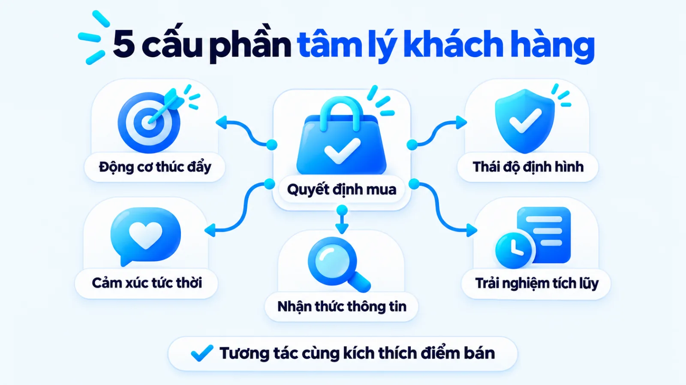
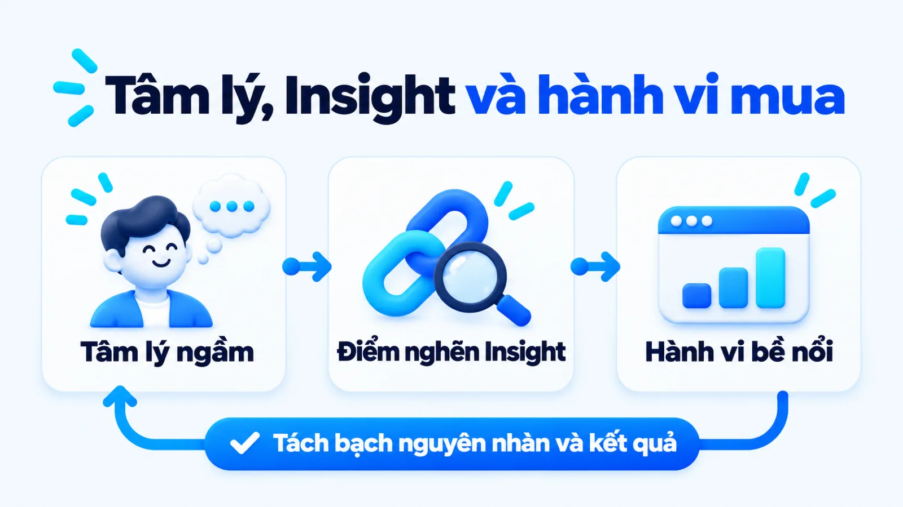
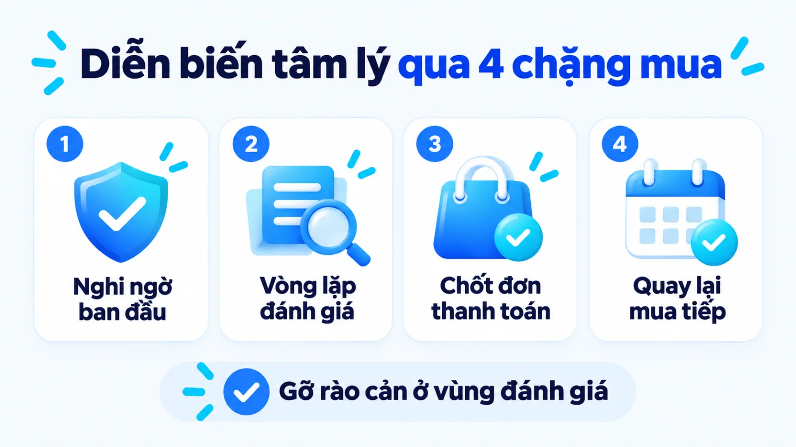
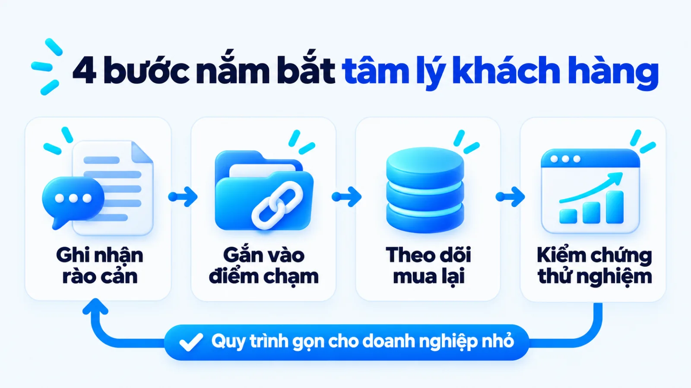
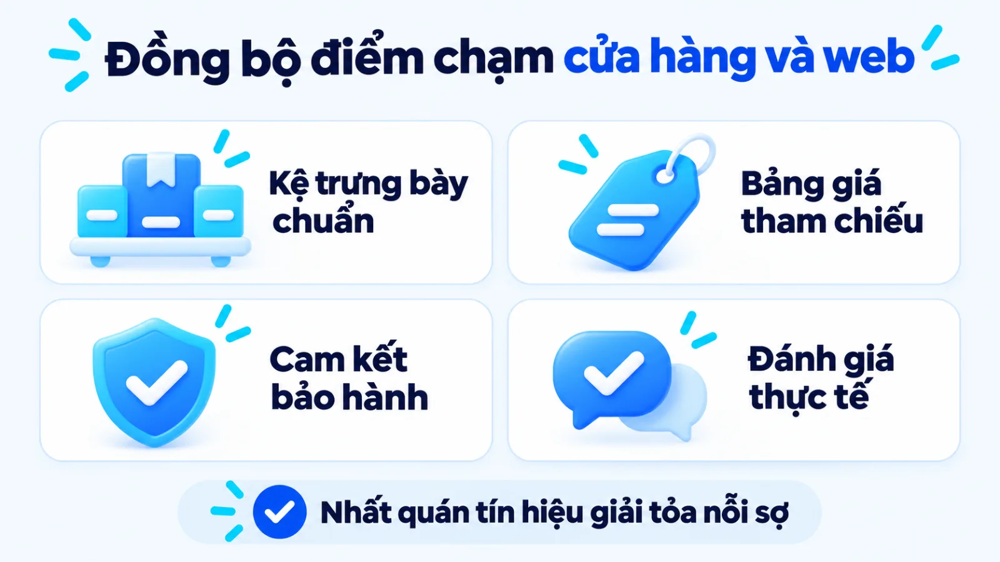
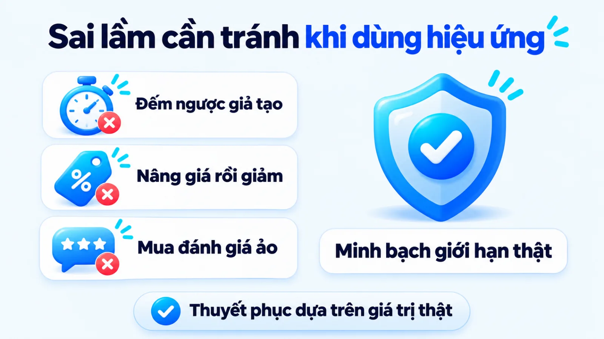
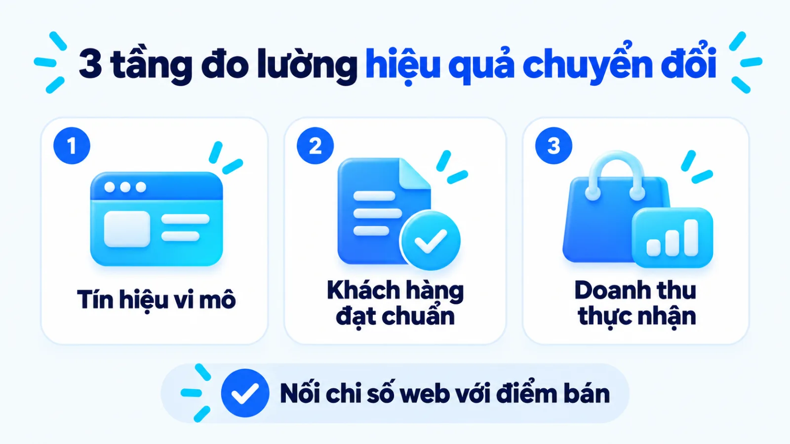

Tâm lý khách hàng là gì và cách ứng dụng
Hiểu rõ tâm lý khách hàng là gì chính là nắm bắt hệ thống động cơ, cảm xúc, nhận thức, thái độ và trải nghiệm bên trong tâm trí điều khiển cách người mua chú ý, đánh giá, chọn lựa và quay lại với sản phẩm. Trong thực tế, nhiều doanh nghiệp đầu tư lớn cho quảng cáo nhưng tỷ lệ chốt đơn vẫn thấp vì chỉ nhìn thao tác nhấp chuột bề nổi mà bỏ qua nỗi sợ rủi ro khiến khách bỏ cuộc phút chót. Khi tách bạch trạng thái tâm trí bên trong với hành vi bên ngoài ở từng điểm chạm, người phụ trách mới biết khâu nào cần gỡ rào cản niềm tin trước khi tăng ngân sách. Tôi là Lê Tuấn Việt, Marketing Leader tại TAKI Group. Trong bài viết này, tôi phân tích bản chất tâm lý người mua, cách phân nhóm khách lẻ dựa trên dữ liệu điểm bán và nguyên tắc kiểm chứng chuyển đổi phù hợp nguồn lực thực tế.
- Đăng ngày
- Cập nhật

Tóm tắt nhanh
- Tâm lý khách hàng bao gồm năm cấu phần động cơ, cảm xúc, nhận thức, thái độ và trải nghiệm tích lũy, đóng vai trò nguyên nhân phía sau các thao tác mua sắm quan sát được tại quầy hoặc trên website.
- Thay vì áp dụng máy móc các bài trắc nghiệm tính cách học thuật cho khách vãng lai, cửa hàng bán lẻ và doanh nghiệp nhỏ nên phân nhóm người mua dựa trên lịch sử giao dịch thực tế tại điểm bán (POS).
- Mọi hiệu ứng tâm lý như sự khan hiếm hay bằng chứng xã hội chỉ tạo ra doanh thu bền vững khi dựa trên năng lực cung ứng thật và được kiểm soát chặt bằng bài toán sản lượng hòa vốn trước khi khuyến mãi.
- Hiệu quả nắm bắt tâm lý người mua phải được nghiệm thu qua khung đo lường ba tầng từ tín hiệu tương tác trung gian, hành vi khách đạt chuẩn cho tới doanh thu thực nhận và tỷ lệ mua lặp lại.
Mục lục bài viết8 phần
Tâm lý khách hàng là gì và 5 cấu phần cốt lõi
Tâm lý khách hàng là gì được định nghĩa là hệ thống động cơ, cảm xúc, nhận thức, thái độ và trải nghiệm tích lũy bên trong tâm trí điều khiển cách người mua chú ý, đánh giá, chọn lựa và quay lại với sản phẩm. Năm cấu phần cốt lõi cấu thành tâm lý người mua gồm: động cơ thúc đẩy, cảm xúc tức thời, nhận thức giá trị, thái độ phản hồi và trải nghiệm quá khứ.
Theo giới thiệu chuyên ngành năm 2024 của American Psychological Association (APA Division 23, Hiệp hội Tâm lý học Hoa Kỳ), tâm lý học người tiêu dùng (Consumer Psychology) nghiên cứu các tiến trình tâm trí giải thích vì sao cá nhân hoặc tổ chức chọn mua, sử dụng hay từ bỏ một hàng hóa. Đặt trong hệ thống Marketing cho doanh nghiệp, đây là lớp nguyên nhân gốc rễ quyết định một thông điệp bán hàng được đón nhận hay bị lướt qua.
Nhiều chủ SME (doanh nghiệp vừa và nhỏ) thường tìm kiếm các mẹo giật tít ngắn hạn mà bỏ qua cấu trúc vận hành của tâm trí người mua. Khi bóc tách rõ năm mảnh ghép bên trong não bộ khách hàng trước lúc rút ví, đội ngũ mới thiết kế được điểm chạm thuyết phục thay vì đoán mò theo cảm tính. Năm cấu phần cốt lõi định hình quyết định của người mua bao gồm các yếu tố dưới đây.
- Động cơ (Motivation): Lực đẩy nội tại xuất phát từ nhu cầu giải quyết một vấn đề chức năng hoặc mong muốn khẳng định vị thế cá nhân.
- Cảm xúc (Emotion): Trạng thái hào hứng, an tâm hoặc lo ngại rủi ro phát sinh ngay khi tiếp xúc với hình ảnh, giá bán và nhân viên tư vấn.
- Nhận thức (Perception): Cách khách hàng tiếp nhận, chọn lọc thông tin và tự định giá trị sản phẩm dựa trên tiêu chuẩn so sánh sẵn có.
- Thái độ (Attitude): Đánh giá chủ quan và mức độ thiện cảm dài hạn của người mua đối với thương hiệu dựa trên hệ quy chiếu cá nhân.
- Trải nghiệm (Experience): Kết quả đúc kết từ lịch sử sử dụng sản phẩm thực tế, trực tiếp định hình mức độ hài lòng và thói quen quay lại mua.

Các yếu tố ảnh hưởng đến tâm lý khách hàng
Tâm trí người mua không vận hành trong môi trường chân không mà chịu sự chi phối liên tục từ bối cảnh xung quanh trước và trong lúc giao dịch. Để lựa chọn chiến thuật marketing cho SME sát thực tế, người phụ trách cần phân tích rõ các yếu tố ảnh hưởng đến tâm lý khách hàng thông qua bốn nhóm tác nhân bên ngoài tại điểm chạm. Bốn nhóm yếu tố này gồm đặc điểm cá nhân, môi trường xã hội, kịch bản thông điệp và kích thích vật lý tại điểm bán.
Ở kênh trực tuyến, tốc độ tải trang, bố cục thông tin và tính minh bạch của chính sách bảo hành quyết định cảm giác an toàn của người xem. Trong khi đó, tại cửa hàng vật lý, hoạt động tiếp thị tại điểm bán (In-store Marketing) và nghệ thuật trưng bày hàng hóa (Visual Merchandising) như vị trí kệ ngang tầm mắt, ánh sáng hay bảng giá mỏ neo trực tiếp điều hướng sự chú ý. Tôi luôn yêu cầu đội ngũ quan sát điểm chạm thực tế tại quầy và trên trang đích trước khi viết bất kỳ thông điệp quảng cáo nào.
Tâm lý khách hàng là gì so với hành vi, insight
Khi đặt câu hỏi tâm lý khách hàng là gì so với hành vi mua sắm và sự thật ngầm hiểu (Customer Insight), điểm khác biệt nằm ở vị trí biểu hiện và vai trò trong chuỗi ra quyết định. Tâm lý khách hàng là tiến trình nhận thức và cảm xúc bên trong tâm trí, hành vi là thao tác quan sát được ở bên ngoài, còn insight là xung đột cốt lõi giải thích vì sao hành vi đó xuất hiện.
Trong quá trình vận hành chiến dịch, sai lầm phổ biến của nhiều đội ngũ là đánh đồng số lượt nhấp trên GA4 (công cụ phân tích web Google Analytics 4) hoặc giao dịch tại POS (điểm bán hàng) với sự tin tưởng thực sự vào thương hiệu. Một khách mở bảng giá nhiều lần trong tuần có thể không phải vì đã sẵn sàng mua, mà vì còn lo ngại khoản phí phát sinh chưa rõ. Bảng dưới đây đối chiếu ba khái niệm theo bốn tiêu chí phục vụ quyết định thực thi.
| Tiêu chí | Tâm lý khách hàng | Hành vi mua và Insight |
|---|---|---|
| Bản chất cốt lõi | Tiến trình động cơ, cảm xúc, nhận thức và thái độ diễn ra trong tâm trí | Hành vi là thao tác bên ngoài; Insight là sự thật ngầm hiểu đúc kết từ xung đột |
| Tín hiệu quan sát | Không nhìn thấy trực tiếp, phải suy luận qua phản hồi và câu hỏi lặp lại | Hành vi đếm được qua điểm bán POS, công cụ phân tích web GA4; Insight phát hiện qua phỏng vấn sâu |
| Câu hỏi giải quyết | Người mua đang nghĩ gì, sợ rủi ro nào và ưu tiên tiêu chí nào khi cân nhắc? | Họ thực hiện thao tác gì (Hành vi) và vì sao họ khao khát nhưng còn chần chừ (Insight)? |
| Ứng dụng cho SME | Thiết kế bố cục điểm chạm, chính sách cam kết và kịch bản tư vấn gỡ rào cản | Đo lường tỷ lệ chuyển đổi từng bước và chọn góc tiếp cận thông điệp chủ đạo |
Giới hạn khi đọc bảng: dữ liệu hành vi thu thập từ công cụ chỉ cho biết người dùng đã làm gì chứ không tự động trả lời nguyên nhân tâm lý phía sau. Như Nielsen Norman Group đã phân tích trong tài liệu đo lường trải nghiệm năm 2013 tại Hoa Kỳ, các bước hành vi nhỏ trên website phản ánh sự tiến triển tâm lý dẫn tới chuyển đổi chính, nhưng người làm marketing vẫn cần kết hợp dữ liệu zero-party và first-party để kiểm chứng động cơ thật của khách hàng.

Diễn biến tâm lý khách hàng qua 4 chặng mua
Diễn biến tâm lý khách hàng khi mua sản phẩm vận động qua bốn chặng liên tiếp gồm: nghi ngờ phòng vệ ban đầu, vòng lặp mở rộng nghiên cứu và thu hẹp đánh giá, trải nghiệm kiểm chứng giá trị thực tế và hình thành thói quen mua lặp lại. Bốn chặng tâm lý này đòi hỏi bốn kịch bản điểm chạm và thước đo hoàn toàn khác nhau.
Báo cáo nghiên cứu hành vi người tiêu dùng Decoding Decisions công bố năm 2020 tại Anh của Think with Google phối hợp cùng The Behavioural Architects (thực hiện qua quan sát hành trình mua và thí nghiệm mô phỏng mua sắm đa ngành) chỉ ra rằng giữa tác nhân kích hoạt nhu cầu và quyết định mua cuối cùng không phải là một đường thẳng. Trong khoảng giữa hỗn độn (Messy Middle), người mua liên tục lặp lại hai trạng thái tâm lý là mở rộng khám phá lựa chọn (Exploration) và thu hẹp đánh giá phương án (Evaluation).
Nếu doanh nghiệp đưa thông điệp thúc ép chốt đơn quá sớm khi khách đang ở chặng nghi ngờ, phản ứng phòng vệ sẽ kích hoạt khiến họ rời bỏ trang đích ngay lập tức. Ngược lại, ở chặng đánh giá cuối cùng, nếu trang sản phẩm thiếu thông số đối chiếu rõ ràng hoặc tại quầy hàng thiếu bảng giá niêm yết minh bạch, người mua sẽ quay lại vòng lặp tìm kiếm sang đối thủ khác. Bảng dưới đây ánh xạ bốn giai đoạn diễn biến tâm lý với rào cản thực tế và kịch bản điểm chạm tương ứng.
| Chặng tâm lý | Rào cản tại web hoặc quầy | Kịch bản điểm chạm và chỉ số |
|---|---|---|
| 1. Nghi ngờ ban đầu | Cảnh giác với lời quảng cáo phóng đại, chưa tin sản phẩm giải quyết được vấn đề | Nêu đúng triệu chứng thực tế, trưng bày sản phẩm mẫu thật; đo tỷ lệ dừng lại xem |
| 2. Nghiên cứu so sánh | Quá tải thông tin trong vòng lặp khám phá và đánh giá, sợ chọn sai hoặc mua hớ | Cung cấp bảng so sánh thông số, giá mỏ neo minh bạch; đo lượt xem bảng giá, tư vấn |
| 3. Trải nghiệm mua | Lo ngại phí ẩn phút chót, thủ tục thanh toán phức tạp hoặc rủi ro không đổi trả được | Rút gọn biểu mẫu, gắn cam kết bảo hành cạnh nút mua; đo tỷ lệ hoàn tất thanh toán |
| 4. Mua lặp lại | Quên thương hiệu sau khi dùng xong hoặc bị thu hút bởi ưu đãi dùng thử của đối thủ | Nhắc lịch tái mua theo chu kỳ sử dụng qua Zalo, thẻ tích điểm; đo tỷ lệ quay lại |
Giới hạn khi đọc bảng: thời gian người mua lưu lại ở mỗi chặng phụ thuộc vào giá trị đơn hàng và rủi ro ngành hàng. Với hàng tiêu dùng nhanh tại tiệm tạp hóa, chặng nghi ngờ và nghiên cứu diễn ra chỉ trong vài chục giây trước kệ hàng; còn với dịch vụ y tế hoặc phần mềm doanh nghiệp, vòng lặp đánh giá kéo dài nhiều tuần qua các điểm chạm O2O (Online-to-Offline, kết nối trực tuyến tới ngoại tuyến). Hiểu nhịp độ này giúp bạn chọn content angle theo tâm lý người đọc sát từng bước quyết định.

4 nhóm khách mua lẻ từ dữ liệu tại điểm bán
Nhiều bài viết tổng hợp thường khuyên chủ cửa hàng phân loại người mua theo 16 nhóm tính cách MBTI (Myers-Briggs Type Indicator, chỉ số phân loại tính cách Myers-Briggs). Vậy nhân viên bán hàng tại quầy làm sao biết một vị khách vãng lai thuộc nhóm tính cách hướng nội hay trực giác trong ba phút giao tiếp? Cách phân loại đó không khả thi trong vận hành thực tế vì không gắn với dữ liệu thu thập được tại điểm bán POS.
Thay vì đoán tính cách qua cảm tính, người quản lý cửa hàng bán lẻ và thương mại điện tử nên phân khúc người mua thành bốn nhóm dựa trên lịch sử hóa đơn và hành vi thực tế tại quầy. Bốn nhóm khách mua lẻ phân tách từ lịch sử giao dịch gồm: khách săn khuyến mãi, khách mua theo thói quen, khách ưu tiên tiện lợi và khách VIP.
Trong đó, khách săn khuyến mãi chỉ chốt đơn khi có chiết khấu hoặc quà tặng kèm; còn khách mua theo thói quen lặp lại đúng một giỏ hàng cố định theo chu kỳ. Nhóm khách ưu tiên tiện lợi thường chọn điểm bán gần trong Trade Area (khu vực thương mại quanh điểm bán) để thanh toán nhanh, trong khi khách VIP chi tiêu đơn hàng giá trị cao và đòi hỏi dịch vụ hậu mãi cá nhân hóa.
Khi nào dùng mô hình Big Five, DISC và VALS
Việc ưu tiên dữ liệu POS trong bán hàng hàng ngày không có nghĩa là các khung lý thuyết tâm lý học mất đi giá trị ứng dụng. Theo APA Dictionary of Psychology (bản cập nhật năm 2023 của Hiệp hội Tâm lý học Hoa Kỳ), mô hình năm yếu tố tính cách lớn (Big Five) phân loại đặc điểm tâm lý con người theo năm chiều hướng gồm: mức độ cởi mở với trải nghiệm, tính tận tâm, tính hướng ngoại, tính dễ chịu và sự nhạy cảm cảm xúc.
Bên cạnh Big Five, mô hình DISC (phân loại hành vi theo bốn nhóm Thống trị, Ảnh hưởng, Kiên định, Tuân thủ) và khung VALS (Values and Lifestyles, phân khúc theo động cơ tâm lý và nguồn lực người tiêu dùng) chỉ phát huy tác dụng khi doanh nghiệp có điều kiện thực hiện khảo sát định lượng hoặc phỏng vấn sâu. Tôi chỉ sử dụng các mô hình này ở giai đoạn nghiên cứu phát triển dòng sản phẩm mới hoặc định vị thông điệp thương hiệu dài hạn, tuyệt đối không bắt nhân viên bán hàng dùng chúng để đoán tâm lý khách vãng lai tại quầy.
Quy trình 4 bước nắm bắt tâm lý khách hàng
Phương pháp nắm bắt tâm lý khách hàng hiệu quả cho doanh nghiệp vừa và nhỏ gồm bốn bước tuần tự: ghi nhận rào cản thực tế tại điểm bán và website, ánh xạ hiệu ứng tâm lý vào đúng điểm chạm, thiết lập cơ chế theo dõi mua lặp lại vừa sức nguồn lực và kiểm chứng phản ứng bằng thử nghiệm thực tế. Dưới đây là chi tiết thao tác và đầu ra của từng bước.

Bước 1: Ghi nhận rào cản tại điểm bán và web
Bắt đầu bằng việc thu thập danh sách những câu hỏi, lời từ chối hoặc biểu hiện ngập ngừng lặp đi lặp lại của khách hàng trước khi quyết định rời đi. Tại cửa hàng vật lý, hãy yêu cầu thu ngân và nhân viên tư vấn ghi chép lại các lý do chính khiến khách cầm sản phẩm lên xem trên kệ trưng bày nhưng lại đặt xuống trong tuần qua, kết hợp rà soát lưu lượng khách bước vào từ khu vực địa lý quanh điểm bán (Trade Area).
Trên kênh trực tuyến, người phụ trách kết hợp xem bản đồ nhiệt (Heatmap), bản ghi phiên truy cập (Session Recording) với dữ liệu sự kiện trên công cụ phân tích web để tìm vị trí người đọc ngừng cuộn trang hoặc thoát ra ở bước điền biểu mẫu. Mọi rào cản được chọn để xử lý phải dựa trên tần suất xuất hiện thực tế thay vì suy đoán chủ quan trong phòng họp.
Đầu ra: danh sách 3 đến 5 điểm nghẽn tâm lý lớn nhất tại quầy hàng hoặc trang đích, kèm tần suất ghi nhận trong kỳ đo.
Bước 2: Ánh xạ hiệu ứng tâm lý vào điểm chạm
Sau khi gọi tên đúng rào cản, hãy chọn nguyên tắc tâm lý phù hợp để tháo gỡ ngay tại điểm chạm tương ứng trên hành trình triển khai marketing bán hàng online lẫn tại cửa hàng. Báo cáo Decoding Decisions năm 2020 của Think with Google chứng minh sáu thiên kiến nhận thức tác động mạnh đến quyết định chọn thương hiệu trong giai đoạn cân nhắc gồm: quy tắc ngón tay cái theo ngành hàng (Category Heuristics), sức mạnh của sự tức thời, bằng chứng xã hội (Social Proof), sự khan hiếm (Scarcity), thẩm quyền chuyên môn (Authority) và sức mạnh của miễn phí.
Cùng với khung nghiên cứu của Google, tài liệu phân tích trải nghiệm người dùng năm 2014 tại Hoa Kỳ của Nielsen Norman Group làm rõ nguyên tắc bằng chứng xã hội trong 6 nguyên tắc thuyết phục của nhà tâm lý học Robert Cialdini: khi chưa chắc chắn, con người nhìn vào hành động và đánh giá của người khác để định hướng lựa chọn. Khi đưa vào quy trình viết content marketing hoặc thiết kế vật phẩm quảng cáo tại điểm bán (POSM, Point of Sale Materials), bạn cần ghép đúng từng hiệu ứng với đúng nỗi sợ của khách hàng.
Nếu khách sợ sản phẩm khó sử dụng, hãy dùng quy tắc ngón tay cái bằng cách tóm tắt các thông số cốt lõi ngay dưới tiêu đề hoặc trên nhãn kệ hàng. Nếu khách sợ chất lượng không như lời giới thiệu, hãy đặt đánh giá thực tế của người mua cùng phân khúc hoặc chứng nhận kiểm định của tổ chức có thẩm quyền ngay cạnh khu vực ra quyết định.
Đầu ra: bảng ánh xạ từng điểm nghẽn tâm lý với hiệu ứng thuyết phục, vị trí đặt thông điệp trên trang đích hoặc kệ trưng bày POSM.
Bước 3: Theo dõi mua lặp lại khi chưa có CRM
Một rào cản thực thi lớn của các cửa hàng bán lẻ quy mô nhỏ là chưa đủ ngân sách và nhân sự để vận hành hệ thống quản trị quan hệ khách hàng (CRM, Customer Relationship Management) đa tầng phức tạp. Tuy nhiên, theo dõi tâm lý và thói quen mua lặp lại không phụ thuộc vào phần mềm đắt tiền mà bắt đầu từ kỷ luật ghi nhận dữ liệu định danh tại điểm thu ngân.
Cửa hàng nhỏ có thể triển khai ngay bằng ba công cụ sẵn có: dùng sổ bán hàng POS tra cứu theo số điện thoại người mua, phát hành thẻ tích điểm vật lý đóng dấu theo lượt ghé thăm, hoặc gắn nhãn phân nhóm khách hàng (Tag) trực tiếp trên Zalo Official Account và bảng tính Excel.
Mỗi khi khách thanh toán lần đầu, nhân viên gắn một nhãn ngắn gọn theo dòng sản phẩm chính và chu kỳ tiêu dùng dự kiến (như nhóm hàng tiêu hao theo tháng) để chủ động nhắn tin hỏi thăm trải nghiệm đúng thời điểm khách phát sinh nhu cầu mua mới.
Đầu ra: tệp dữ liệu khách hàng định danh theo số điện thoại có gắn nhãn nhóm hành vi và lịch nhắc chăm sóc lại theo chu kỳ tiêu dùng.
Bước 4: Kiểm chứng phản ứng bằng A/B testing
Mọi giả thuyết về tâm lý người mua đều phải được kiểm chứng bằng số liệu hành động thực tế trước khi nhân rộng toàn bộ ngân sách. Hãy thực hiện thử nghiệm phân tách (A/B Testing) bằng cách chạy song song hai phiên bản tiêu đề, hai cách trình bày mức giá mỏ neo trên trang đích, hoặc đổi vị trí đặt kệ hàng chủ lực tại cửa hàng trong hai khung thời gian tương đương.
Trong suốt kỳ thử nghiệm, bạn chỉ nên thay đổi từng biến số tâm lý riêng lẻ tại một thời điểm để biết chính xác yếu tố nào tạo ra sự chênh lệch về tỷ lệ chuyển đổi. Với các ngành dịch vụ cần đồng bộ cả con người, quy trình và bằng chứng hữu hình tại điểm bán, bạn có thể tham khảo thêm cách phối hợp trong chiến lược 7P cho marketing dịch vụ để giữ trải nghiệm khách hàng nhất quán sau khi thử nghiệm.
Đầu ra: biên bản kết quả thử nghiệm xác định rõ phương án điểm chạm có tỷ lệ chuyển đổi mục tiêu cao hơn trong cùng kỳ đo.

3 sai lầm khi ứng dụng hiệu ứng tâm lý người mua
Ba sai lầm phổ biến khiến các hiệu ứng tâm lý người mua phản tác dụng tại doanh nghiệp vừa và nhỏ gồm: lạm dụng sự khan hiếm và giảm giá ảo làm gãy đổ niềm tin, tung ưu đãi kích cầu khi chưa tính toán ngưỡng sản lượng hòa vốn, và trưng bày bằng chứng xã hội thiếu kiểm chứng thực tế.
Lạm dụng hiệu ứng khan hiếm và giảm giá ảo
Hiệu ứng khan hiếm và hiệu ứng tương phản giá chỉ thúc đẩy hành động khi người mua tin rằng giới hạn số lượng hoặc mức ưu đãi đó là sự thật. Cách làm sai phổ biến ở nhiều trang bán hàng là gắn đồng hồ đếm ngược tự động đặt lại mỗi khi tải trang, hoặc nâng khống giá niêm yết lên mức cao rồi gạch ngang báo giảm giá sâu quanh năm.
Ngược lại, cách làm đúng là gắn giới hạn với năng lực cung ứng thật như thông báo rõ số suất tư vấn tối đa mà đội ngũ xử lý được trong tuần, hoặc giảm giá xả kho cho lô hàng cận hạn sử dụng có ghi rõ ngày sản xuất. Tương tự với nguyên tắc cam kết và nhất quán (Consistency Principle), cách áp dụng sai là ép khách điền biểu mẫu dài ngay bước đầu, còn cách làm đúng là gợi mở tương tác nhỏ như chọn nhu cầu trước khi đề xuất gói sản phẩm.
Tung ưu đãi kích cầu khi chưa tính điểm hòa vốn
Bên cạnh rủi ro mất uy tín vì giảm giá ảo, việc dùng khuyến mãi để kích thích tâm lý mua nhanh mà không tính điểm hòa vốn rất dễ đẩy cửa hàng vào cảnh doanh số tăng nhưng lợi nhuận âm. Dưới đây là một tình huống giả định để minh họa cách tính toán an toàn tài chính trước khi tung ưu đãi.
Ví dụ biên tập, không phải kết quả khách hàng thật
Bài toán sản lượng hòa vốn khi giảm giá kích cầu tại cửa hàng bán lẻ
Giả sử một cửa hàng mỹ phẩm tại Hà Nội (ví dụ biên tập, không phải kết quả khách hàng thật) đang bán một dòng kem dưỡng với giá 500.000 đồng, giá vốn nhập hàng là 350.000 đồng, tức biên lợi nhuận gộp ban đầu đạt 30% (tương đương 150.000 đồng mỗi hộp). Để kích hoạt tâm lý mua hàng cuối tháng, cửa hàng dự kiến giảm giá trực tiếp 10% (còn 450.000 đồng), làm lợi nhuận gộp trên mỗi hộp giảm xuống còn 100.000 đồng.
- 30%
- Biên lợi nhuận gộp ban đầu trước khuyến mãi
- 10%
- Mức giảm giá trực tiếp áp dụng tại quầy
- +50%
- Sản lượng cần tăng thêm để giữ nguyên tổng lãi gộp
Trong ví dụ biên tập này, áp dụng công thức lấy mức phần trăm giảm giá (10%) chia cho hiệu số giữa biên lợi nhuận gộp ban đầu và mức giảm giá (30% trừ 10% còn 20%), cửa hàng buộc phải bán tăng thêm 50% số lượng sản phẩm mới thu về tổng lợi nhuận gộp bằng mức trước khi giảm giá. Nếu lưu lượng khách tự nhiên trong khu vực quanh cửa hàng không thể giúp sản lượng tăng vượt ngưỡng 50% này, chiến thuật giảm giá sẽ trực tiếp ăn mòn lợi nhuận ròng.
Dùng bằng chứng xã hội thiếu kiểm chứng thực tế
Báo cáo nghiên cứu giao diện người dùng năm 2014 của Nielsen Norman Group tại Hoa Kỳ cảnh báo rằng việc ngụy tạo đánh giá khách hàng hoặc thổi phồng các con số thống kê trên trang đích sẽ nhanh chóng phản tác dụng và phá hủy độ tin cậy của thương hiệu ngay khi người dùng phát hiện dấu hiệu bất thường. Người mua hiện nay đủ nhạy bén để nhận ra những lời khen sáo rỗng cùng một giọng văn hoặc ảnh chụp màn hình cắt ghép thiếu nguồn gốc.
Đối với các đơn vị mới gia nhập thị trường hoặc đang tìm hướng triển khai marketing số cho startup, khi chưa có nhiều lượt mua để tạo hiệu ứng đám đông, tuyệt đối không nên mua đánh giá ảo.
Thay vào đó, hãy sử dụng bằng chứng xác thực ở quy mô nhỏ nhưng cụ thể: công khai quy trình kiểm định chất lượng đầu vào, hiển thị tên thật và bối cảnh sử dụng của những khách hàng đầu tiên đã đồng ý chia sẻ, hoặc cho phép dùng thử mẫu nhỏ để khách tự kiểm chứng. Tâm lý khách hàng không phải là mẹo thao túng.

Cách đo chuyển đổi từ tâm lý khách hàng cho SME
Doanh nghiệp vừa và nhỏ cần đo hiệu quả ứng dụng tâm lý khách hàng thông qua khung chỉ số ba tầng gồm: tín hiệu tương tác và chuyển đổi vi mô, hành vi khách hàng đạt chuẩn, cùng doanh thu thực nhận gắn với tỷ lệ mua lặp lại. Cách phân tầng này giúp đội ngũ không nhầm lẫn lượt xem bề nổi với hiệu quả kinh doanh thật.
Theo tài liệu kỹ thuật cập nhật năm 2024 của Google Analytics Help, trong Google Analytics 4 (GA4), sự kiện (Event) ghi nhận mọi thao tác tương tác cụ thể trên website hoặc ứng dụng, còn sự kiện chính (Key Event) đánh dấu những hành động mang lại giá trị kinh doanh cốt lõi. Khi kết hợp định nghĩa kỹ thuật này với cách phân loại của Nielsen Norman Group, người làm marketing sẽ tách bạch được đâu là bước đệm tâm lý và đâu là kết quả tài chính cuối phễu.
Trong dự án cố vấn Marketing cho Hệ thống Y Đa khoa TOMEC (từ tháng 8/2025 đến tháng 8/2026) do tôi phụ trách, việc rà soát lại thông điệp giải tỏa tâm lý lo ngại trên các điểm chạm và chuẩn hóa theo dõi chuyển đổi đã giúp tăng 40% khách hàng tiềm năng và giảm 54% CPL (Cost Per Lead, chi phí trên mỗi khách hàng tiềm năng), từ 1,2 triệu xuống 550.000 đồng mỗi data.
Ở mảng bán lẻ trực tiếp, dự án cố vấn Marketing cho Uyên Uyên Mart (từ tháng 5/2025 đến tháng 5/2026) cũng góp phần tăng 45% lượt khách đến cửa hàng và nâng doanh thu toàn hệ thống từ 3 lên 6 tỷ đồng mỗi tháng (tăng 100% so với cùng kỳ). Kết quả từ các dự án trong điều kiện cụ thể này cho thấy mọi thay đổi về điểm chạm tâm lý đều phải quy về thước đo khách hàng và doanh thu thực tế theo bảng ba tầng dưới đây.
| Tầng chỉ số | Cách tính và nguồn dữ liệu | Giới hạn khi đọc số liệu |
|---|---|---|
| Tầng 1: Tương tác | Tỷ lệ cuộn qua vùng cam kết, lượt xem bảng giá trên GA4, lượt cầm xem hàng tại kệ | Chỉ phản ánh sự chú ý và giảm nghi ngờ ban đầu, chưa khẳng định ý định chi tiền thật |
| Tầng 2: Khách đạt chuẩn | Tỷ lệ gửi biểu mẫu hợp lệ (Key Event trên GA4), số khách để lại số điện thoại tại quầy | Phụ thuộc vào chất lượng nguồn truy cập và kỹ năng tiếp nhận, tư vấn của đội bán hàng |
| Tầng 3: Doanh thu xác nhận | Tỷ lệ chốt đơn thành công, giá trị đơn trung bình và tỷ lệ quay lại mua trên sổ POS | Chịu ảnh hưởng đồng thời bởi yếu tố mùa vụ, tồn kho và chính sách giá của đối thủ |
Giới hạn khi đọc bảng: bạn không thể quy kết toàn bộ mức tăng doanh thu ở tầng cuối phễu cho một thay đổi nhỏ về câu chữ trên trang đích nếu trong cùng kỳ đó doanh nghiệp đồng thời tăng ngân sách quảng cáo hoặc vào mùa cao điểm mua sắm. Để tách lớp nguyên nhân chính xác, hãy theo dõi các chuyển đổi vi mô trong hành trình mua ở tầng tương tác và tầng khách đạt chuẩn trong cùng một quy ước đơn vị đếm theo người hoặc theo phiên trước khi kết luận hiệu quả.

Câu hỏi thường gặp về tâm lý khách hàng
Cửa hàng nhỏ chưa có CRM theo dõi mua lặp lại bằng gì?
Cửa hàng nhỏ hoàn toàn theo dõi được hành vi mua lặp lại thông qua sổ bán hàng tại quầy (POS) định danh bằng số điện thoại kết hợp bảng tính hoặc thẻ phân nhóm trên Zalo Official Account. Mỗi khi phát sinh giao dịch, nhân viên ghi nhận ngày mua, dòng sản phẩm chính và lý do khách chọn để lọc ra danh sách người mua cần nhắc lại theo từng chu kỳ tiêu dùng định kỳ. Doanh nghiệp chỉ cần đầu tư phần mềm CRM chuyên dụng khi lượng dữ liệu khách hàng vượt quá khả năng lọc thủ công và cần tự động hóa kịch bản chăm sóc đa kênh.
Khi nào SME nên ưu tiên dữ liệu POS hơn khảo sát tâm lý?
Doanh nghiệp vừa và nhỏ nên ưu tiên dữ liệu lịch sử giao dịch tại điểm bán (POS) trong giai đoạn cần tối ưu doanh số ngắn hạn vì hóa đơn phản ánh trực tiếp hành vi chi tiền thật của người mua. Các đợt khảo sát tâm lý diện rộng hoặc phỏng vấn sâu chỉ thực sự cần thiết khi doanh nghiệp chuẩn bị tung dòng sản phẩm mới, tái định vị phân khúc giá hoặc khi số liệu bán hàng sụt giảm liên tiếp mà chưa rõ nguyên nhân. Kết hợp lịch sử xuất hàng với một đến hai câu hỏi ngắn ngay tại quầy thu ngân giúp tiết kiệm ngân sách mà vẫn nắm đúng động cơ mua.
Khi nào doanh nghiệp không nên dùng hiệu ứng khan hiếm?
Không nên áp dụng hiệu ứng khan hiếm khi sản phẩm thuộc nhóm hàng tiêu dùng phổ thông luôn sẵn kho hoặc khi doanh nghiệp không có giới hạn thực tế về năng lực cung ứng theo thời gian. Việc treo biển báo sắp hết hàng hay đặt đồng hồ đếm ngược tự động quay lại từ đầu trên trang đích sẽ làm người mua mất niềm tin ngay khi họ phát hiện thông tin giả tạo. Với các mặt hàng mua theo thói quen định kỳ, cam kết chất lượng ổn định và giao hàng đúng hẹn mang lại tỷ lệ giữ chân cao hơn nhiều so với việc thúc ép tâm lý chốt đơn.
Vì sao khách thêm giỏ hàng nhiều nhưng bỏ đơn phút cuối?
Hiện tượng người mua thêm sản phẩm vào giỏ nhưng rời đi ở bước thanh toán thường bắt nguồn từ tâm lý e ngại rủi ro phát sinh phút chót như phí vận chuyển ẩn, biểu mẫu yêu cầu quá nhiều thông tin cá nhân hoặc thiếu cam kết đổi trả rõ ràng. Trong giai đoạn thu hẹp đánh giá của hành trình mua, nhiều khách hàng chỉ dùng giỏ hàng như bảng tính tạm để cộng tổng chi phí và so sánh giữa các nhà cung cấp khác nhau. Để tháo gỡ điểm nghẽn này, trang đích cần công khai phí giao hàng sớm, rút gọn số trường thông tin bắt buộc và đặt tóm tắt chính sách bảo hành ngay cạnh nút thanh toán.
Ngành dịch vụ B2B áp dụng tâm lý mua hàng khác gì bán lẻ?
Có sự khác biệt rất lớn về động cơ và rào cản quyết định giữa hai mô hình kinh doanh này. Trong bán lẻ tiêu dùng (B2C), quyết định mua thường diễn ra nhanh tại điểm chạm cảm xúc dưới tác động của trưng bày trực quan, mức giá mỏ neo và đánh giá từ đám đông. Ngược lại, tâm lý người mua dịch vụ doanh nghiệp (B2B) đặt nặng nhu cầu kiểm soát rủi ro vận hành và trách nhiệm giải trình trước tập thể, nên điểm chạm cần ưu tiên hồ sơ năng lực thực thi, bảng tính hiệu quả đầu tư và quy trình nghiệm thu minh bạch thay vì giảm giá chớp nhoáng.
Cách tính sản lượng hòa vốn trước khi giảm giá khuyến mãi?
Tỷ lệ sản lượng cần bán tăng thêm để giữ nguyên tổng lợi nhuận gộp được tính bằng cách lấy mức phần trăm giảm giá chia cho hiệu số giữa biên lợi nhuận gộp ban đầu và mức phần trăm giảm giá đó. Chẳng hạn trong một phép tính giả định, nếu biên lợi nhuận gộp của mặt hàng là 30% và cửa hàng giảm giá 10%, hiệu số biên lợi nhuận còn lại là 20%, nghĩa là sản lượng bán ra phải tăng thêm tối thiểu 50% mới bù đắp được phần chiết khấu. Nếu sức mua của khu vực thương mại quanh cửa hàng không thể hấp thụ mức tăng sản lượng này, chương trình khuyến mãi sẽ làm hụt quỹ lợi nhuận thực tế.
Kết luận
Nắm bắt đúng bản chất tâm lý khách hàng là gì giúp doanh nghiệp chuyển từ lối làm marketing đoán mò sang việc thiết kế điểm chạm có căn cứ, gỡ đúng rào cản niềm tin ở từng chặng mua và kiểm soát khuyến mãi bằng bài toán lợi nhuận thực. Nguyên tắc quan trọng nhất là luôn tách bạch trạng thái tâm trí bên trong với hành vi bề nổi và chỉ áp dụng các đòn bẩy thuyết phục dựa trên năng lực cung ứng thật.
Ngay trong tuần này, bạn có thể chọn một trang đích có tỷ lệ thoát cao hoặc một quầy trưng bày nhiều khách xem nhưng ít người mua, rồi ghi lại những câu hỏi phổ biến nhất để bổ sung thông tin cam kết và bằng chứng xác thực tại điểm chạm đó. Khi bài toán mở rộng sang đồng bộ thông điệp đa kênh, chuẩn hóa phân nhóm khách hàng trên toàn hệ thống điểm bán và thiết lập khung đo lường chuyển đổi ba tầng gắn liền doanh thu, việc chỉnh sửa rời rạc từng mẫu quảng cáo lẻ sẽ không còn đủ sức giải quyết.
Hệ thống bán hàng của bạn đang làm khách hàng chần chừ ở bước tìm hiểu thông tin hay ở khâu chốt đơn cuối cùng?